{% extends "../_layout.html" %}
{% block head_extend %}
{% endblock %}
{% block content %}
前端-线上监控篇
概要
关于前端项目的线上监控，网上其实已经有很多现成的文章。
所以关于那些大家已经比较了解或者已经被讲解过很多次的技术点，本文就不再重复说明。例如：异常跨域捕获问题、setTimeout/promise等的try()catch(e){}问题等。
当然，网上此方面的文章，主要还是关于前端异常捕获的分析。
而本文分享的重点是，整个监控体系的搭建和使用，涉及到前端、后端服务、数据库等方方面面，以及一些应用场景的举例。
没错，当前的前端技术栈已经足够支撑我们来完成这样一个平台性项目的开发，感兴趣的朋友，不妨试试。
背景
- 线上有挺多不错的云监控平台，为什么要自研
首先，线上的平台是收费的，价格不菲；其次，数据依赖并暴露给第三方，安全堪忧；还有，就是定制化功能无法得到满足，关于这一点，下面会举例说明。
- 一般公司，可能都有一个牛逼的数据平台，为什么要自研
那么关于这个问题，其实就要就具体情况来分析了。
例如平台的功能定位问题，有可能现有平台主要面向运营和产品，偏重数据埋点和用户数据分析，那么其技术属性偏弱，不能满足你的需求。
再例如现有平台基于稳定和通用性等因素，可能针对你的需求要么需要经过较长的排期，要么你的需求太定制化了，置之不理。
总的来说，不同的公司，其实情况不一样，不可一概而论。但是有一个基本点要强调一下，我们要自研的这个监控平台，主要是基于技术和定制化需求，不是用于替代常规的埋点和大数据平台的。所以接下来讲述的时候，大家也可以基于这个点来理解平台的一些功能等。
管理后台设计
管理后台，是负责数据最终结果的可视化展示和配置的。所以无论代码流程是怎么样子的，管理后台是一切成果的终极体现，其好不好用，清不清晰，直接决定了这整个产品的用户体验。所以，这里优先讲一下管理后台的设计和一些功能点。
首页
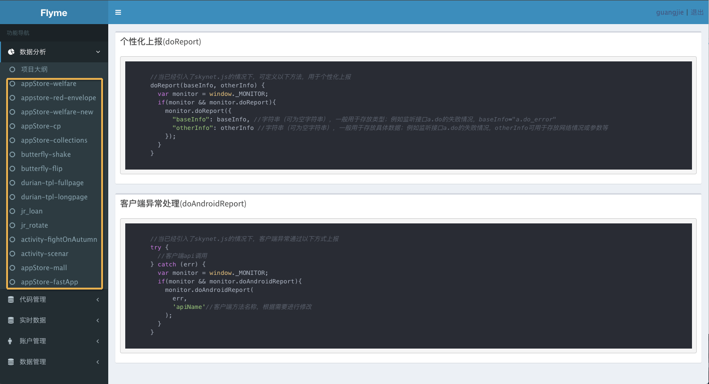
如上图，左侧是菜单，右侧是首页的相关说明，一个很常规的布局方式。
重点讲一下，建议数据模块以项目为单位进行划分（图中黄色框框部分）。笔者看过一些平台是使用域名进行划分的，这种方式，如果多个项目使用同一个域名的话，那么数据都混在一起了，多有不便。
项目数据汇总
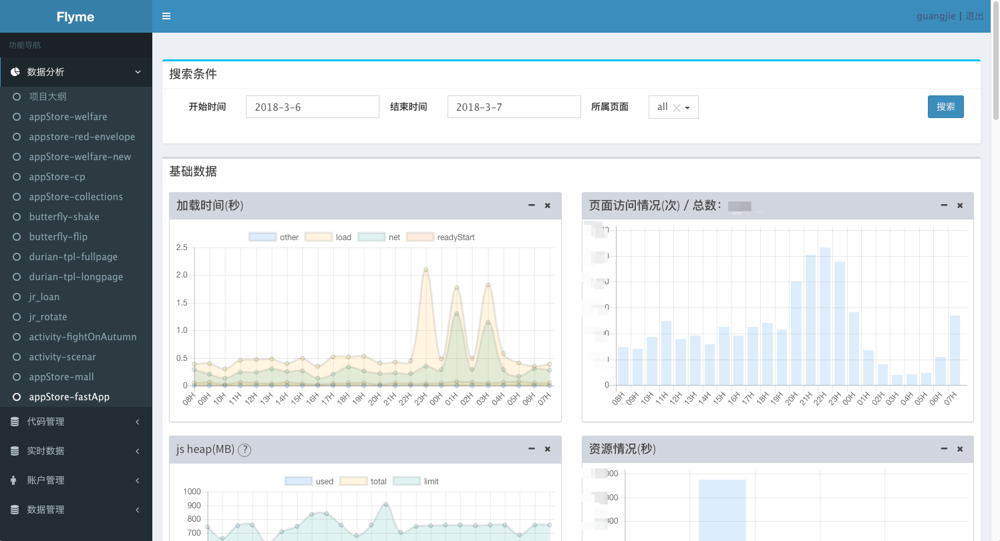
如上图,右侧为数据汇总展示区域。
- “加载时间”图表: 用于展示首屏渲染、网络请求耗时等数据。
- “页面访问情况”图表: 展示页面pv。
- “js heap”图表: 内存使用情况。
- “资源情况”图表: 资源（图片、css、js、iframe等）耗时占比；如果你的页面中未使用iframe，而此处却发现了iframe，那说明你的页面很有可能被第三方注入代码了。
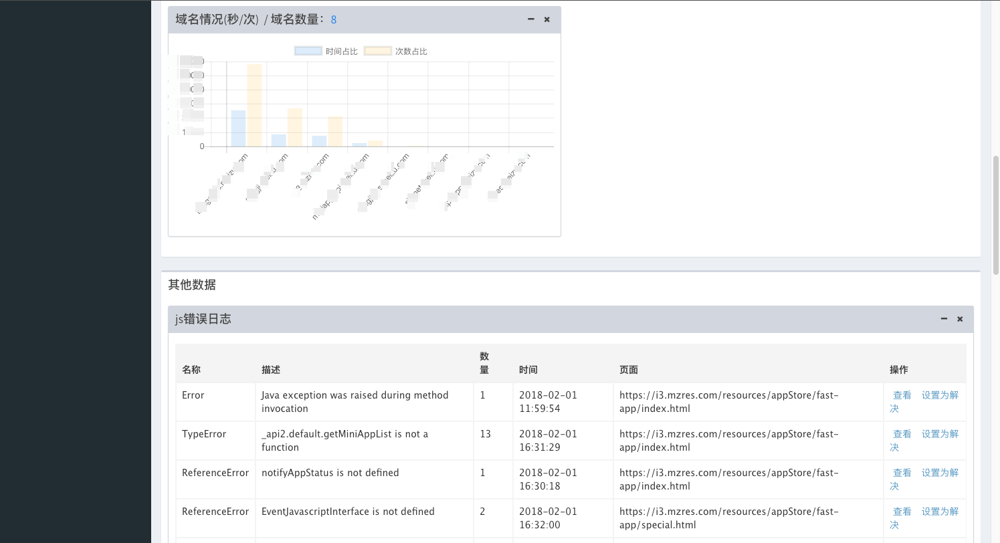
如上图,右侧为数据汇总展示区域。
- “域名情况”图表: 用于展示不同域名下资源耗时占比情况；要是有一些旧网站还在使用着http，那么这个图表还有另外一个作用，如果在这里面看到了一个陌生的域名，那么说明网站很有可能被第三方注入代码了。
- “js错误日志”表格: 用于展示js报错；点击“查看”按钮就可以看到具体的调用堆栈了。
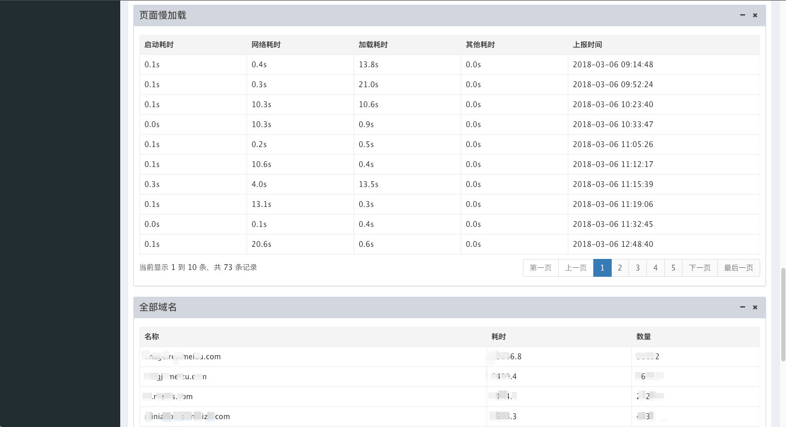
如上图,右侧为数据汇总展示区域。
- “页面慢加载”表格: 用于展示加载较慢的记录。
- “全部域名”表格: 用于展示全部域名的资源耗时占比情况；上面的“域名情况”图表只能展示一小部分的域名情况，如果是http网站，被劫持的可能性非常高，那么域名的数量会非常多。
实时自定义数据获取
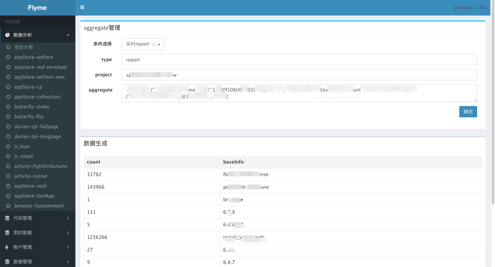
如上图，通过aggregate查询，可以实时获取自定义的数据（这些数据，是通过接口上报上来的定制化数据）。这个功能模块，我们主要用于线上不可重现问题的定位或者一些争议数据的校验，举个例子。
- 关于线上的不可重现问题，很多时候我们只能靠猜。而有了这个功能后，我们就可以采用类似在本地使用
console.log打印日志定位本地问题的方式来定位线上问题了。
功能并不复杂，但是这提供了一个获取线上信息的方式。那么，基于此，其实还是有很多其他的应用场景，在此就不一一列举了。
邮件通知
工作比较忙的时候，常常会忘记或者没时间去一一查看项目中的各种数据。
所以，这里还提供了一个每日邮件汇总功能，将前一天所有项目的关键数据（例如：达到一定数量级别的错误、慢加载等）发邮件给各项目的前端负责人，如下图：
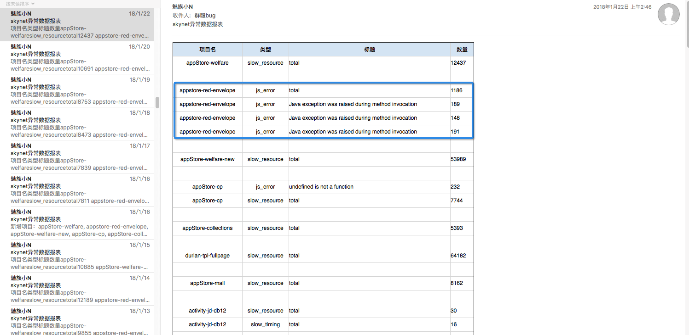
关于图中蓝色框框部分，其实不是前端异常，而是调用客户端接口报的错，那么关于这部分错误，还会提取出来，发邮件给各项目的客户端负责人。
架构
前端捕获
接受监控的网页，需要引入一个监控js（由管理后台根据项目配置，动态生成），那么这个js的作用主要是：捕获并上报js异常和页面timing、memory、resources等信息，当然也提供了方法，用于上报定制化数据。
- 关于js异常捕获的问题，这里就不做详述了，有兴趣的，可以去网上看看相关资料（BadJS之类的）。
- 页面加载性能和资源信息，可以通过
window.Performance获取到。当然这个对象也存在兼容问题，我们的处理方式是不兼容的不上报，做好容错处理，不影响正常业务代码执行便可。大部分的现代浏览器都是支持的，所以对我们的监控影响也不大。
关于window.Performance的处理，类似下图。至于图中的代码和打印出来的字段的意思，可以到网上和github上面查看。
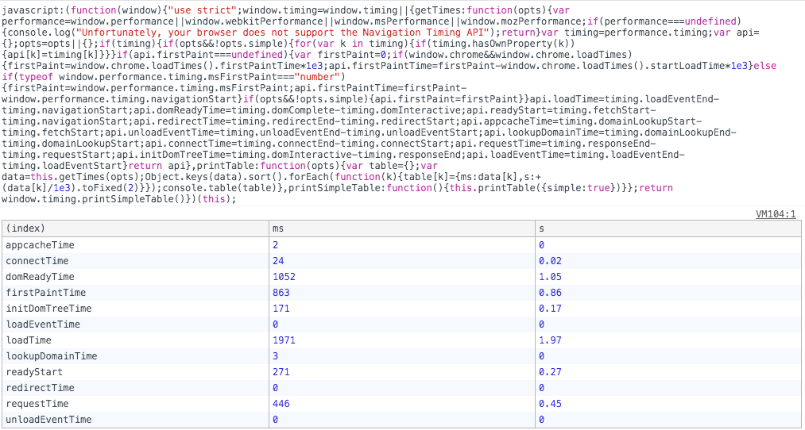
后端服务
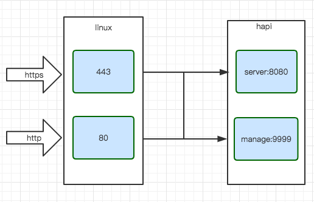
如上图，采用了nginx进行各协议请求的转发和负载均衡等，后端web框架使用的是hapi。这里应该有人有疑惑了，为什么不是koa，不是express等，这些在国内都比较火呢。那么，大致原因如下：
- 这个库本身也是足够优秀的，大团队、高性能、高稳定等等，这个可以查看github和网上相关资料
- 用起来方便、舒服
- 和本项目也挺搭的，服务搭建快捷
总的来说，优秀的框架或库总有那么几个，选一个适合自己的，适合项目的便可。
后端服务大致结构如下图
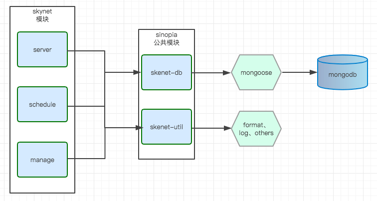
其中的sinopia公共模块，主要是提取了三个后端服务模块的公共的数据库操作库以及工具库，放置于内部仓库中，好处不言而喻。
而其他部分，将在下文一一讲解。
数据库
我们使用的是mongodb，主要基于以下几个方面考量
- 高伸缩性
- 日志高IO
nodejs高匹配- 不是很复杂的数据库操作
工具库主要是mongoose，这个就不多说什么了，nodejs+mongodb，再加上mongoose的话，是不是很搭...毕竟这也是主流吗，哈哈哈。
关于数据库的具体操作，会在下文提及。
server
该模块用于为前端的监控js提供接口服务，主要就是数据信息记录的作用。
其功能不会很复杂，保障高可用是最重要的指标，因为它是唯一向外提供接口的模块，并发量也会比较大。所以，除了常规的运维侧优化，保持接口逻辑的精简也是重要的手段。
大致的原则是，接口尽量简单化，然后把复杂的逻辑都转移到数据处理模块schedule。举个列子：
一个页面的加载，会涉及到各种资源，css、js、图片等。那么每次打开页面后，需要把和本页面并且是本次打开的相关资源的相关数据一次性（分批次的话，请求量暴涨，自行考量）上报到服务器，那么其数据结构便是一个对象列表，而对应到数据库端，便是嵌套文档的结构。没错，没毛病，一切都很自然。
但是，这样开发出来的接口，在性能方面并不理想。
解决之道，就是把对象列表作为json字符串存进数据库（即其对应的mongoose字段数据类型为String），然后在数据处理环节做JSON.parse。如此改造之后，具体数据我忘了，性能大概提升了20%～30%。
然后，由于其对外提供服务，安全性也是需要着重考虑的，安全测试、数据请求大小限制（使用get等）、数据格式检查、模块关键字校验等，这些都是需要做的。
schedule
数据处理模块，主要是用于对前一天上报的数据进行分析和处理。
设想一下，一个pv为500万的页面，其产生的数据记录一般都是其访问量的好几倍（资源数据、加载性能数据、异常数据等），然后一个项目可能有好几个页面。这样一天下来，就可以产生上亿条数据记录。
而，这仅仅是一个普通项目一天的数据量。这么大的数据量，如果不作处理，一个是查询的时候，处理缓慢，第二个，迟早把数据库挤爆。
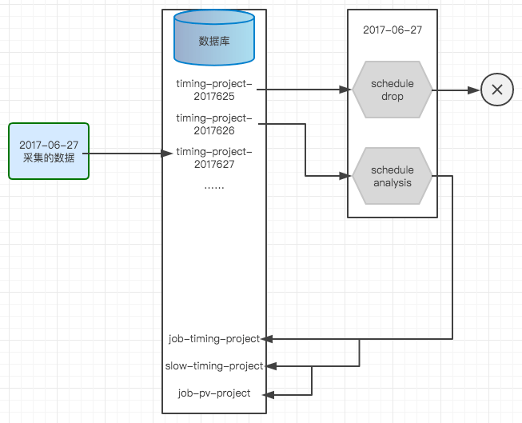
如上图，这是基本的处理流程，举的是timing的例子，但是其他类型的处理流程也是大同小异。
大致是，运行定时任务，于第二天凌晨，把前一天的原始数据取出来，处理完成后，归入对应的结果数据文档，然后把前两天的数据清除，就是说只保留处理完的数据。
基本流程也不是很复杂，但是这部分数据量比较大，容易出现内存溢出，数据库链接异常等问题，需要小心处理。
同时，还需要考虑另外一个问题，像其他的模块，程序异常，只要自动正常重启就行了，但是这个模块，如果数据处理到一半，出现异常了，怎么办，却是一个比较麻烦的事情。因为重启后，刚刚执行到一半的任务还做不做，从哪里开始，这也是一个比其他模块复杂的点。
首先，这里说的是数据正常，但是程序挂了的问题，关于数据异常导致的问题，下文会提及。
目前的做法是，把每个项目的数据处理流程当作一个事务（不是数据库事务，而是用代码逻辑保证的），每完成一个项目的数据处理便在服务器本地文件中记录下来。万一程序挂了，自动重启后，首先读取该记录文件，然后已记录的完成的项目，不做处理，未记录的项目，需要做以下几件事情：
- 从相关的处理结果文档中，查找是否存在未记录项目的前一天的数据，有则删除
- 重新对未记录项目进行数据处理
其中第一项，是为了把执行了一半的项目的数据清除，避免数据重复。第二项，就是把未处理的项目，处理完成。
manage
管理后台就比较简单了，主要是堆代码，前端是使用vue全家桶（写的比较早，so，版本不是很新）现实的，后端还是hapi，然后使用hapi自带的state management做好简单的登录和访问授权即可。
高可用
首先，运维是基础，做好常规的服务器和数据库集群等是高可用的重要保障。
然后，pm2是一个带有负载均衡功能的node应用的进程管理器，下图是server模块的pm2配置文件，可参考一下：
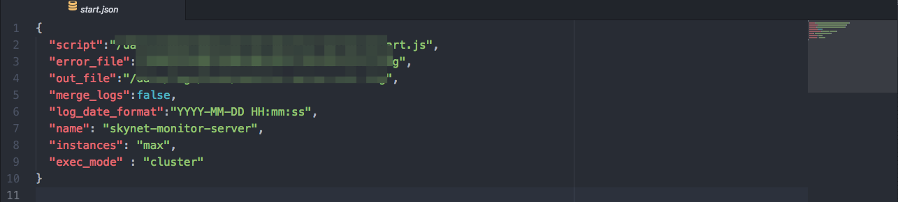
关于上图中每个配置项的意义，就不做详细说明了。其中涉及到日志记录、运行模式、进程个数、日志格式等，如有疑问的，可以到网上查查。
接下来，尽可能详细、有序的日志记录，这个对于你后续发现和定位问题都是及其有帮助的。原则上来说，就是在性能和尽可能详细之间折中吧。
还有关于上文提及的异常数据，采用的处理方式是
- 跳过不处理
- 对于这种情况，除了记录报错信息，还会把数据信息记录到日志
把异常数据记录下来，是为了方便查看和定位问题，但是为了避免日志体积过大（万一异常数据很多或频繁），第二项中的数据信息的记录，对于雷同的数据，只记录一次，不会重复记录。
最后，就是各种细节问题了，做好压力测试，不间断的调优等等，还有就是上文已经提及的，各业务模块定制化的优化处理。
总结
源码
说了这么多，不知道大家有什么感觉，笔者觉得这样一个平台，好处多多，大家是可以挤点时间尝试一下的（毕竟笔者也是利用空余时间进行开发的，做人要有自信，哈哈哈...）：
- 不要怕出错，毕竟即使出错了，也不会影响正常的线上业务
- 可以让你对于线上项目的健康情况，有一个比较清晰的了解
- 帮助你定位和解决一些，以前让你无计可施的，开发和测试环境都无法复现的问题
- 辅助提供线上项目的可量化数据指标
- 此处省略一万个优点...
差不多该讲的都讲了，很多细节这里没办法涉及到，感谢各位捧场！
{% endblock %}
{% block footer_extend %}
{% endblock %}